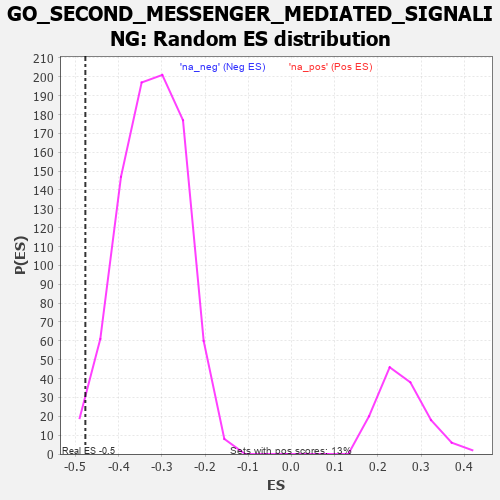

| | | Dataset | 7d |
| Phenotype | NoPhenotypeAvailable |
| Upregulated in class | na_neg |
| GeneSet | GO_SECOND_MESSENGER_MEDIATED_SIGNALING |
| Enrichment Score (ES) | -0.47678277 |
| Normalized Enrichment Score (NES) | -1.4814403 |
| Nominal p-value | 0.012643678 |
| FDR q-value | 0.20804286 |
| FWER p-Value | 1.0 |
Table: GSEA Results Summary
 Fig 1: Enrichment plot: GO_SECOND_MESSENGER_MEDIATED_SIGNALING
Fig 1: Enrichment plot: GO_SECOND_MESSENGER_MEDIATED_SIGNALING
Profile of the Running ES Score & Positions of GeneSet Members on the Rank Ordered List
| PROBE | GENE SYMBOL | GENE_TITLE | RANK IN GENE LIST | RANK METRIC SCORE | RUNNING ES | CORE ENRICHMENT | | 1 | MC4R | | | 57 | 2.491 | 0.0484 | No |
| 2 | ADCY8 | | | 124 | 1.418 | 0.0718 | No |
| 3 | GSK3A | | | 351 | 0.745 | 0.0598 | No |
| 4 | PTBP1 | | | 1441 | 0.402 | -0.0692 | No |
| 5 | JPH1 | | | 1741 | 0.347 | -0.0993 | No |
| 6 | NFAT5 | | | 1856 | 0.326 | -0.1064 | No |
| 7 | CCR4 | | | 1959 | 0.312 | -0.1124 | No |
| 8 | KCNC2 | | | 2075 | 0.295 | -0.1203 | No |
| 9 | SYK | | | 2186 | 0.278 | -0.1281 | No |
| 10 | KSR2 | | | 2292 | 0.261 | -0.1355 | No |
| 11 | BTK | | | 2958 | 0.156 | -0.2163 | No |
| 12 | CHP1 | | | 3089 | 0.138 | -0.2296 | No |
| 13 | AHR | | | 3175 | 0.126 | -0.2376 | No |
| 14 | PDE9A | | | 3360 | 0.095 | -0.2588 | No |
| 15 | CHERP | | | 3587 | 0.062 | -0.2860 | No |
| 16 | FIS1 | | | 3654 | 0.051 | -0.2932 | No |
| 17 | DGKQ | | | 3856 | 0.020 | -0.3182 | No |
| 18 | DDAH1 | | | 4056 | -0.016 | -0.3431 | No |
| 19 | MTOR | | | 4114 | -0.025 | -0.3497 | No |
| 20 | PLCE1 | | | 4127 | -0.028 | -0.3506 | No |
| 21 | PDX1 | | | 4179 | -0.038 | -0.3562 | No |
| 22 | FHL2 | | | 4222 | -0.046 | -0.3605 | No |
| 23 | TSHR | | | 4322 | -0.063 | -0.3717 | No |
| 24 | ADRB2 | | | 4352 | -0.068 | -0.3738 | No |
| 25 | PDE7A | | | 4355 | -0.069 | -0.3725 | No |
| 26 | RASD1 | | | 4409 | -0.078 | -0.3775 | No |
| 27 | LRRK2 | | | 4467 | -0.087 | -0.3828 | No |
| 28 | JPH3 | | | 4481 | -0.091 | -0.3824 | No |
| 29 | NMUR2 | | | 4646 | -0.127 | -0.4003 | No |
| 30 | ITPR1 | | | 4661 | -0.130 | -0.3992 | No |
| 31 | PLCG1 | | | 4770 | -0.151 | -0.4095 | No |
| 32 | MYO5A | | | 4787 | -0.155 | -0.4080 | No |
| 33 | PCLO | | | 4793 | -0.156 | -0.4052 | No |
| 34 | P2RX4 | | | 4813 | -0.161 | -0.4040 | No |
| 35 | ACKR4 | | | 4981 | -0.194 | -0.4208 | No |
| 36 | PDPK1 | | | 5043 | -0.207 | -0.4239 | No |
| 37 | DRD2 | | | 5088 | -0.221 | -0.4245 | No |
| 38 | GPR4 | | | 5219 | -0.250 | -0.4354 | No |
| 39 | MGRN1 | | | 5250 | -0.257 | -0.4334 | No |
| 40 | RIMS2 | | | 5272 | -0.265 | -0.4302 | No |
| 41 | NPY2R | | | 5331 | -0.281 | -0.4312 | No |
| 42 | ITPR3 | | | 5361 | -0.288 | -0.4285 | No |
| 43 | GRIN1 | | | 5381 | -0.291 | -0.4244 | No |
| 44 | EFHB | | | 5447 | -0.306 | -0.4258 | No |
| 45 | ACTN3 | | | 5486 | -0.315 | -0.4236 | No |
| 46 | SPHK1 | | | 5576 | -0.339 | -0.4273 | No |
| 47 | MC5R | | | 5689 | -0.371 | -0.4332 | No |
| 48 | CALCR | | | 5730 | -0.386 | -0.4296 | No |
| 49 | ADA | | | 5798 | -0.405 | -0.4290 | No |
| 50 | CXCR5 | | | 5954 | -0.456 | -0.4385 | No |
| 51 | RGN | | | 6233 | -0.547 | -0.4615 | No |
| 52 | GALR2 | | | 6355 | -0.599 | -0.4634 | Yes |
| 53 | TRPM4 | | | 6390 | -0.612 | -0.4540 | Yes |
| 54 | DYRK2 | | | 6533 | -0.677 | -0.4569 | Yes |
| 55 | P2RX5 | | | 6576 | -0.699 | -0.4466 | Yes |
| 56 | EGFR | | | 6708 | -0.765 | -0.4461 | Yes |
| 57 | GSK3B | | | 6719 | -0.768 | -0.4302 | Yes |
| 58 | NCALD | | | 6743 | -0.781 | -0.4157 | Yes |
| 59 | NMUR1 | | | 6821 | -0.828 | -0.4069 | Yes |
| 60 | PTH1R | | | 6845 | -0.839 | -0.3911 | Yes |
| 61 | PDE2A | | | 6985 | -0.927 | -0.3880 | Yes |
| 62 | CCR2 | | | 7003 | -0.939 | -0.3691 | Yes |
| 63 | GRM5 | | | 7053 | -0.969 | -0.3537 | Yes |
| 64 | PTPRJ | | | 7180 | -1.054 | -0.3461 | Yes |
| 65 | ABCA1 | | | 7243 | -1.113 | -0.3291 | Yes |
| 66 | CIB1 | | | 7280 | -1.152 | -0.3079 | Yes |
| 67 | ANK2 | | | 7298 | -1.170 | -0.2839 | Yes |
| 68 | CD22 | | | 7534 | -1.449 | -0.2813 | Yes |
| 69 | CALM1 | | | 7567 | -1.499 | -0.2518 | Yes |
| 70 | MCU | | | 7644 | -1.637 | -0.2249 | Yes |
| 71 | TRPM2 | | | 7680 | -1.712 | -0.1911 | Yes |
| 72 | ADCY1 | | | 7695 | -1.752 | -0.1537 | Yes |
| 73 | ADCY9 | | | 7704 | -1.783 | -0.1149 | Yes |
| 74 | PDE4D | | | 7764 | -1.944 | -0.0789 | Yes |
| 75 | PKD2 | | | 7822 | -2.167 | -0.0377 | Yes |
| 76 | CALM3 | | | 7869 | -2.525 | 0.0129 | Yes |
Table: GSEA details [plain text format]

Fig 2: GO_SECOND_MESSENGER_MEDIATED_SIGNALING: Random ES distribution
Gene set null distribution of ES for GO_SECOND_MESSENGER_MEDIATED_SIGNALING